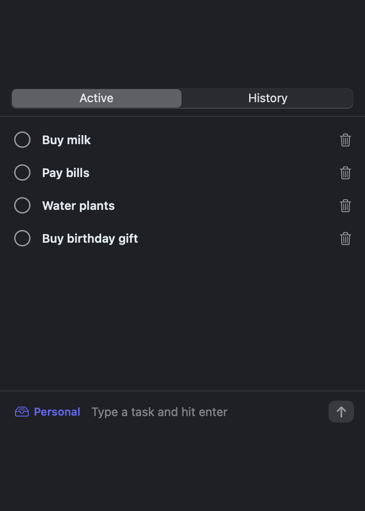

A tiny native macOS menu bar todo list, organized by workspace. No cloud, no account, no sync — everything stays on your Mac.
brew install djalmaaraujo/tap/todo-menubar

Separate your contexts. Switch from the selector next to the input and the list follows.
One selection lists every workspace, each under its own header.
Check a task off and it moves to a date-grouped history timeline. Delete from either.
The icon shows how many active tasks the current selection has.
One self-contained Swift app. SwiftUI + AppKit, nothing vendored.
Everything lives in local storage. No network calls, no telemetry, ever.
brew install djalmaaraujo/tap/todo-menubar
Or build from source:
git clone https://github.com/djalmaaraujo/todo-menubar.git cd todo-menubar/app ./build.sh
xcode-select --install).